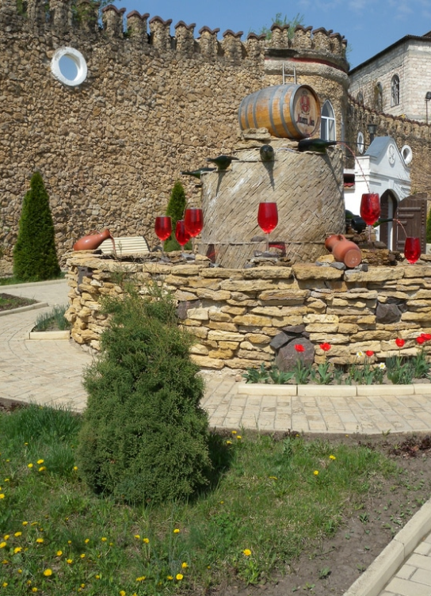

Cricova Winery

A quick 30 minutes from Chisinau is Cricova Winery. The second largest underground winery in the world; it is definitely something to experience. You’ll find 120 kilometres of complex roadways above ground and an elaborate tunnel system underground which has been in place since the 15th century when the limestone was dug out to build Chisinau. This wonderful “wine city” includes warehouses, underground tasting rooms, and guided tours. You’ll travel 100 metres below ground and have a look at what 1.25 million bottles of wine looks like. The wine industry is growing in Moldova, which means that it’s worth bringing a bottle or two home.